Que Hacer
Aguascalientes está en el centro de México y debido a eso, no hay playas ni resorts. Sin embargo, dependingo de tus gustos, esta ciudad tendrá muchas atracciones para ti.
Carnitas Mora (puerco)
Calle 57 305, Col del Trabajo, 20180
Carnitas La Especial (puerco)

General Guadalupe Victoria 119, Zona Centro, 20000
Lechon Pascualito (puerco bebe)

Dr Jesús Díaz de León 101, Zona Centro, 20000
Las Antorchas (res)

Av. Francisco I. Madero 240, Zona Centro, 20000
Las Costillas de Sancho (res)

Paseo De La Feria s/n, Desarrollo Especial Zona de la Feria, 20070
Mercado Juarez (cordero)
General Guadalupe Victoria s/n, Zona Centro, 20050
La Palapa de Charly

Av Aguascalientes Sur 3901, Desarrollo Especial Villa Asunción, 20235
Costa Dorada
Paseo de los Chicahuales 111 Jesús María, 20900
La Estación
28 de Agosto No.210, Barrio de la Estación, 20259
Cenaduria San Antonio
Av. José Ma. Chávez 607, Obraje, 20230
La Oaxaquita

Av. Las Americas 1738, Valle Dorado, 20235
Los Originales Menudos Toña
Las Planchitas

General Miguel Barragán 441, Zona Centro, 20000
Mesón del taco

Av. Aguascalientes Pte. 508, Colinas del Río, 20010
La Colonial
Av. Aguascalientes Pte. 308, Barrio de San Marcos, 20070
La Flor de Aguascalientes
Av. Las Americas #805, Santa Elena, 20230
Café del codo

Calle del Codo s/n, Centro, 20000
Caffeto's
Manuel M. Ponce 130, Barrio de San Marcos, 20070
Museo Jose Guadalupe Posada
| 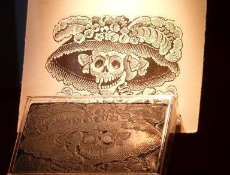 |
Posada fue un artista y caricaturista cuya arte incluía crítica sociopolítica. Sus más conocidas artes son sus calacas y calaveras, esqueletos en los que el humor negro entretenía al público. Es este museo podemos ver mas de tres mil ejemplares.
|
Lado norte Jardín del Encino s/n, Barrio Del Encino, 20240
Museo Nacional de la Muerte
|
El museo incluye cientos de artifactos relacionados con la muerte. Incluye de igual manera el papel de la icónica muerte y el arte funeral incluído en la cultura mexicana, contemporánea y antigua. El museo hace una relacion entre la sociedad mexicana con la muerte, que va desde la representación de gente que se burla de la muerte, a la representación tal cual de la muerte física desde la era pre-hispánica hasta la era de la cultura pop. |
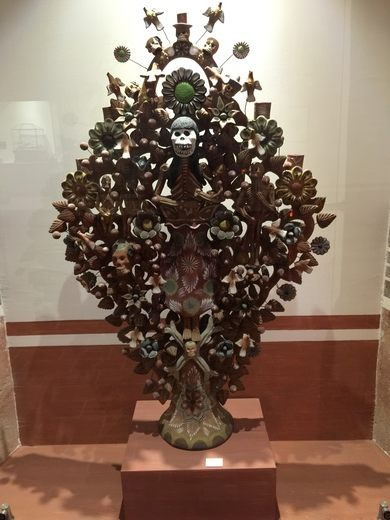 |
Rivero y Gutiérrez x, José María Morelos y Pavón, Zona Centro, 20000
Ferrocarrilero Aguascalientes
| 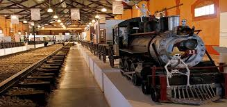 |
El museo se encuentra en la viejo almacen de ferrocarriles que se construyó en el siglo diecinueve y que se usaba para pesar y distribuir diferentes productos via tren.
|
Plaza de las Tres Centurias, 28 de Agosto S/N, Barrio de la Estación, 20259
Museo Tradicional del Juguete
|
En esta colección encontramos los mas inovadores y tradicionales juguetes hechos de inusuales materials. La exhibición incluye piezas de todo el mundo. |
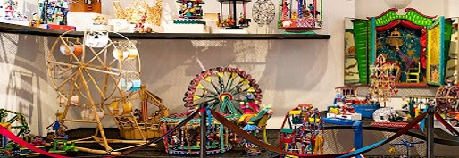 |
Nieto 224, Zona Centro, 20000 Aguascalientes, Ags., Mexico
Plaza vestir
| 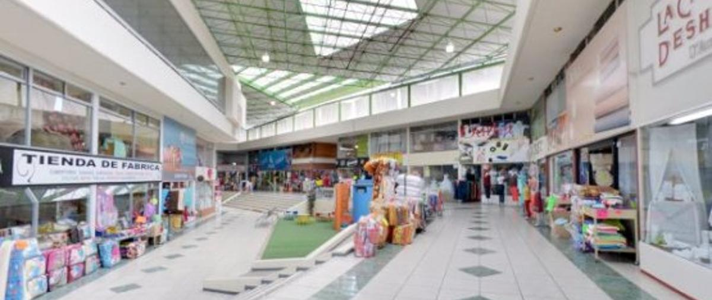 |
Plaza que incluye textiles regionales, comida y ropa.
|
Blvd. José María Chávez 1940, Cd Industrial, 20290
Calle Nieto
|
Calle llena de productos regionales. |
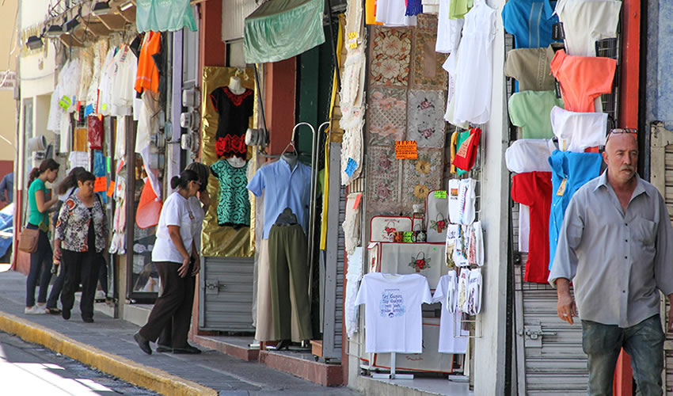 |
20000, Nieto 233 B, Zona Centro, 20000
Plaza Altaria
| 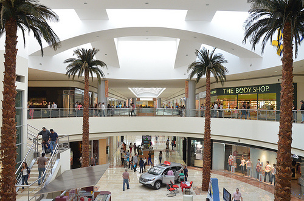 |
Gran plaza con tiendas de marcas famosas de rango internacional. Incluye una zona de comida y un cinema. |
Blvd. A Zacatecas 849, Trojes de Alonso, 20116
Villasuncion
|
Plaza al aire libre en donde puedes encontrar una gran variedad de productos, marcas y servicios al igual que zonas de diversion, entretenimiento y descanso. |
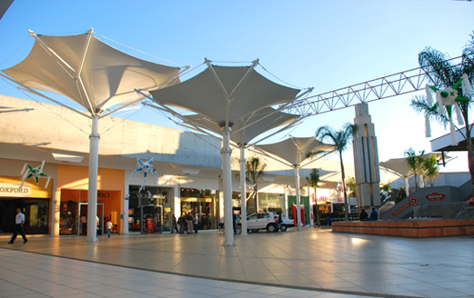 |
Blvd. José María Chávez s/n, Centro Comercial Villa Asunción, 20280
Múseo regional de historia
| 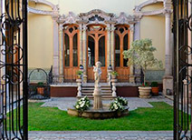 | 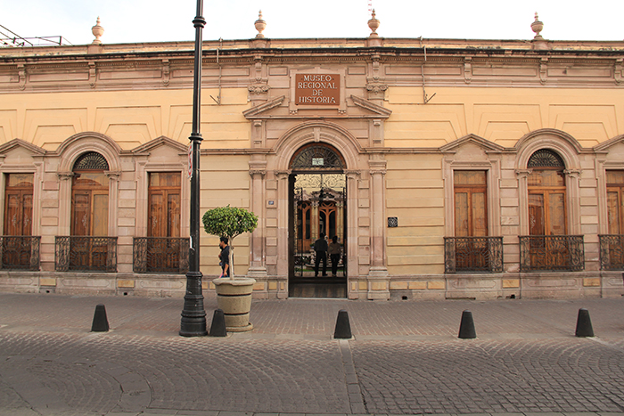 |
El museo cuenta la historia de Aguascalientes y su gente en siete zonas de exhibición en donde el pasado esta recreado en un intento de mostrar como se vivía anteriormente
|
Venustiano Carranza 118, Zona Centro, 20000
Centro Cultural los Arquitos
|
Los Arquitos es un centro cultura en Aguascalientes que tiene exhibiciones, talleres, pláticas y conciertos.
|
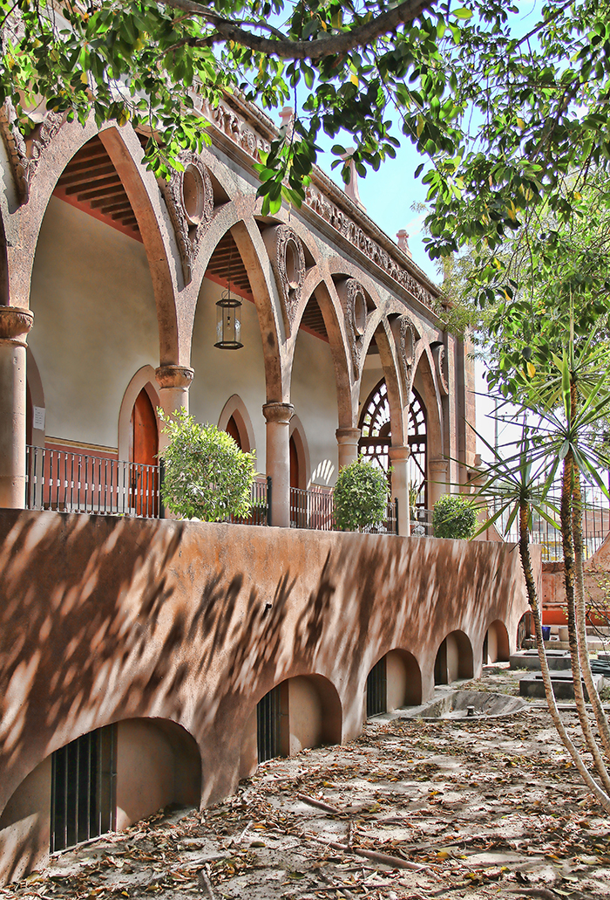 | 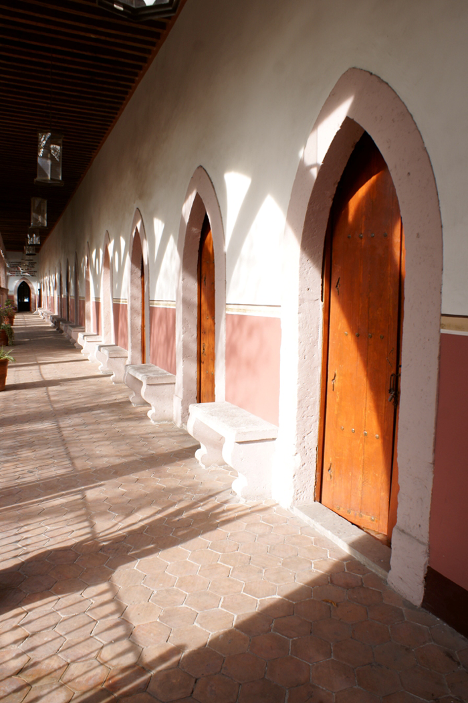 |
Alameda S/N, Barrio de la Purísima, 20000
El Caracol
| 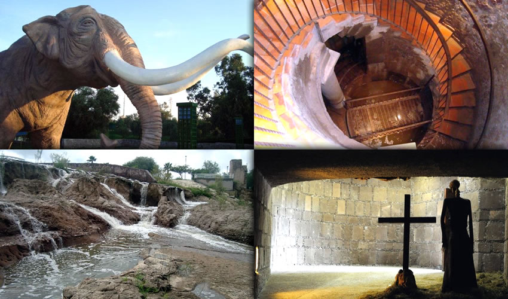 |
Este parque recrea diferentes eras geológicas. De igual manera, cuenta con un sistema de suministro de agua que solía usado para toda la ciudad.
El depósito de agua se ha preservado al igual que el continuo de túneles los cuales pueden ser explorados a una profundidad de veintitres pies.
|
Cáncer 546, Desarrollo Especial Parque Ecológico el Cedazo
Jardin de San Marcos
| 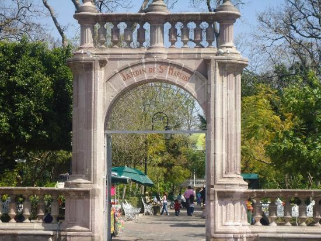 | 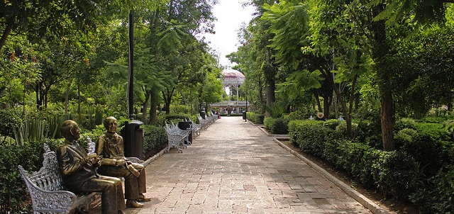 |
Desde 1831, los jardínes han sido el centro de la vida social y recreativa.
Están adornados con bancas de fierro, una fuente debajo del gazebo, esculturas representando costumbres locales y cuatro entradas apuntando a cada uno de los puntos cardinales.
|
Jesús F. Contreras, Barrio de San Marcos, 20070
Andador J. Pani
|
En el barrio tradicional de San Marcos, esta calle peatonal es una de las zonas mas visitadas en la feria de San Marcos en Abril.
|
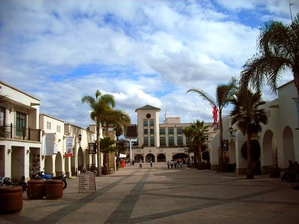 |
José F. Elizondo 105, Desarrollo Especial Zona de la Feria
Isla San Marcos
| 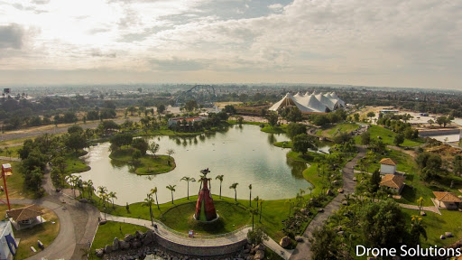 |
Zona de 109 hectáreas y uno de los sitios principales para la feria nacional del San Marcos.
|
Jesús F. Contreras, Barrio de San Marcos, 20070
Plaza Patria
|
La Plaza Patria se encuentra en el centro de la ciudad y ha sido testigo de cambios históricos en Aguascalientes. En el centro de la plaza se encuentra el Exedra, un monumento contruido en 1808 en honor del rey Carlos IV de España.
|
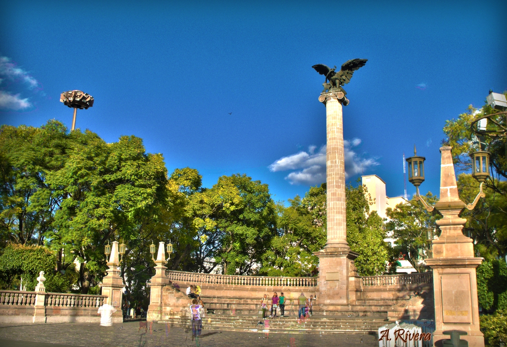 |
Tres Centurias
| 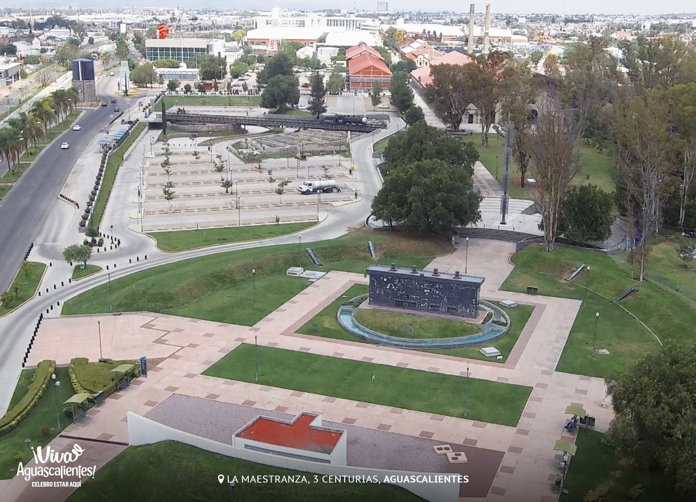 |
En estos jardínes puedes encontrar un show tecnológico de igual manera que nueva arquitectura basada en el ferrocarril.
|
Av. Ferrocarril, Desarrollo Especial Talleres F.F.C.C., 20270
Cristo Roto
|
Escultura de 25 m de altura que representa los problemas que este municipio sufrió. Esta escultura invita a no olvidar al débiles.
|
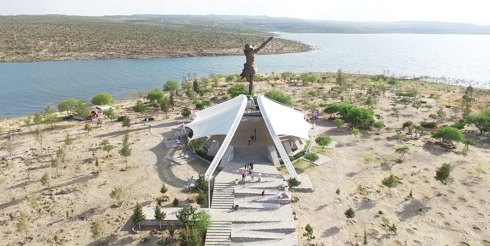 |
Juan Domínguez 511, San José de Gracia
Boca de Tunel
| 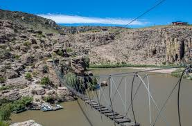 |
Circuito que incluye 13 puentes colgantes(el más largo es de 345 pies de largo y a una altura de 50 pies) y dos tirolesas que cruzan la presa Potrerillos, un punto perfecto para la aventura y paisajes naturales.
|
Temazcal Spa
|
Servicios de masaje y temazcal, al igual que hidromasaje, hotel y restaurante.
|
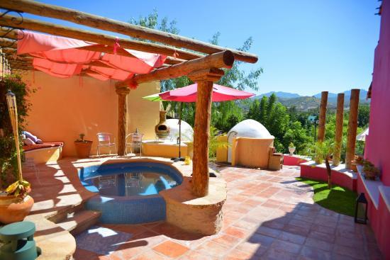 | 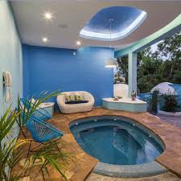 |
Malecón Nte, López Mateos, 20802 Calvillo
El Ocote
| 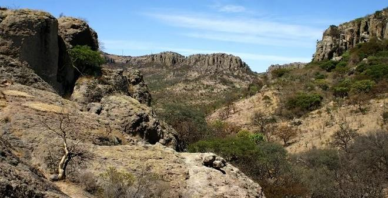 |
Sitio arqueológico que muestra los primeros habitantes de la región. Puedes encontrar pinturas rupestres, zonas para acampar, y zonas para hacer actividades como ciclismo de montaña, pesca en la presa Tolimique, escalar y cabalgata a caballo. |
Segunda Privada Encino, El Ocote
Malpaso
|
Encontrada en la Sierra del Laurel, el cañón del Malpaso Canyon es un atracción principal, comprende una serie de elevaciones de 160 pies, desde donde puedes ver una gran variedad de aves y contemplar un bello paisaje lleno de cactus y arbustos salvajes. |
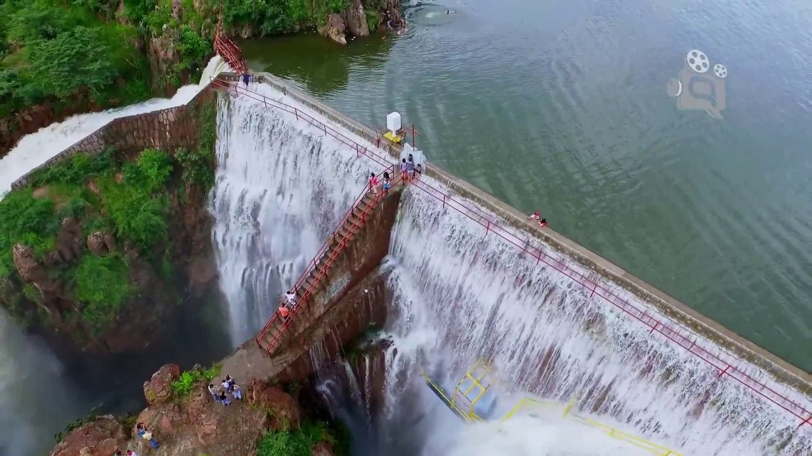 | 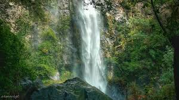 |
Presa de Malpaso, Independencia, 20802 Calvillo
Merendero San Pancho
| 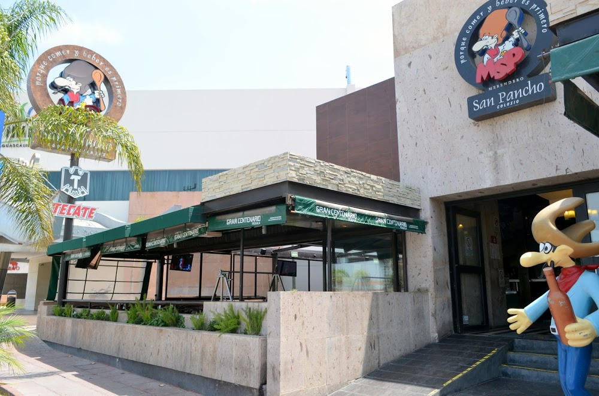 | 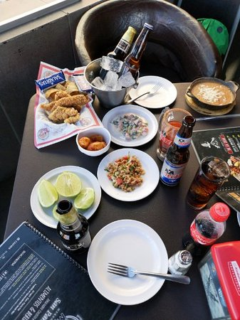 |
Un lugar especial entre un restaurante y un bar. Este lugar te ofrece comida y snacks mientras tu continues ordenando bebidas.
|
Av. Las Americas 102, Las Américas, 20230
Calle Carranza
|
En el centro de la ciudad, esta calle tiene los bares y antros mas visitados en la ciudad.
|
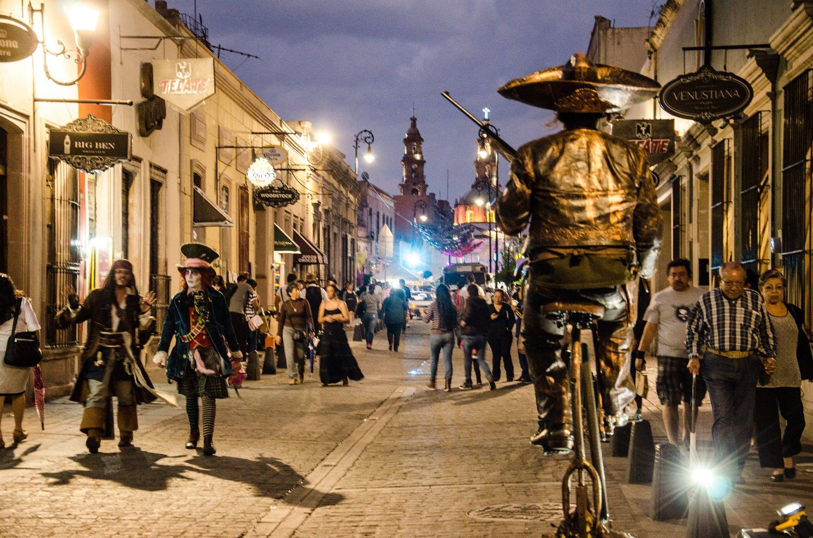 |
Venustiano Carranza, Zona Centro
Calle Colosio
| 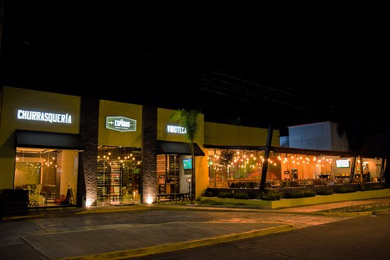 |
En el norte de la ciudad, esta calle tiene los bares y antros mas caros y elegantes de la ciudad.
|
Blvd. Luis Donaldo Colosio Murrieta, Jardines de la Concepción I
 Hoteles Hoteles |
Menú Principal |
_es